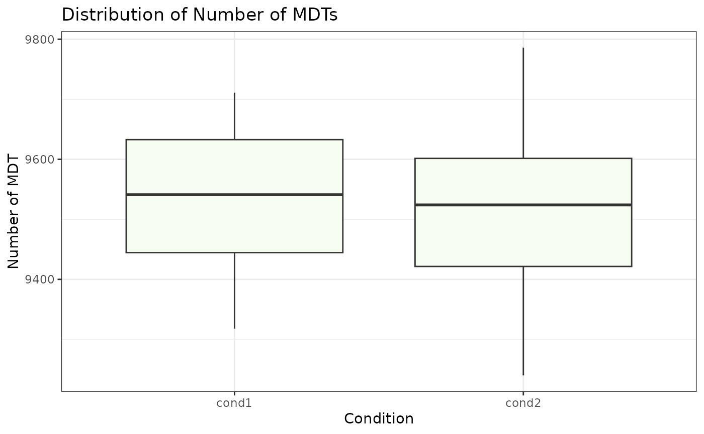

Introduction to Most Dominant Transcripts
Detection of Most Dominant Transcripts
Tülay Karakulak
2024-05-09
Source:vignettes/MDTToolset-vignette.Rmd
MDTToolset-vignette.RmdIntroduction
This guide provides a step-by-step workflow for identifying the Most Dominant Transcripts (MDTs) within a bulk RNA-sequencing dataset. The MDTToolset package is designed to work with outputs generated by various RNA-Seq quantification tools, including, but not limited to, Salmon and Kallisto. For the accurate detection of MDTs, users must utilize normalized data values (e.g., TPM values) for bulk RNA-seq data.
Load MDTToolset
Prepare Data
In this section, we utilize the TPM outputs from the Kallisto tool, originating from an (RNA-Seq experiment) [https://www.nature.com/articles/s41597-020-0541-4]. The data is openly accessible and available for download. The MDTToolset includes two conditions as example cases for users. If you already have the quantification data prepared for each condition, you may proceed to the next step. Ensure that the first two column names are ‘ENST’ and ‘ENSG’, respectively, followed by the sample names as shown below.
## read TPM data
cond1 <- MDTToolset::cond1 # molecular retina
cond2 <- MDTToolset::cond2 # peripheral retina
# visalize the dataframes. Note that you should have knitr R package installed.
knitr::kable(head(cond1,2), caption = 'TPM Matrix')| ENST | tpm_kallisto_macular_retina.1 | tpm_kallisto_macular_retina.10 | tpm_kallisto_macular_retina.11 | tpm_kallisto_macular_retina.12 | tpm_kallisto_macular_retina.2 | tpm_kallisto_macular_retina.3 | tpm_kallisto_macular_retina.4 | tpm_kallisto_macular_retina.5 | tpm_kallisto_macular_retina.6 | tpm_kallisto_macular_retina.7 | tpm_kallisto_macular_retina.8 | tpm_kallisto_macular_retina.9 |
|---|---|---|---|---|---|---|---|---|---|---|---|---|
| ENST00000000233 | 189.3070 | 202.8500 | 203.376 | 232.7330 | 191.1680 | 184.5650 | 195.5500 | 228.8620 | 202.2350 | 248.3690 | 196.5360 | 235.9530 |
| ENST00000000412 | 43.7888 | 52.5654 | 52.852 | 65.5688 | 59.9673 | 53.0147 | 64.1605 | 48.3739 | 60.3188 | 62.3249 | 46.5275 | 63.5542 |
| ENST | tpm_kallisto_peripheral_retina.1 | tpm_kallisto_peripheral_retina.10 | tpm_kallisto_peripheral_retina.11 | tpm_kallisto_peripheral_retina.12 | tpm_kallisto_peripheral_retina.2 | tpm_kallisto_peripheral_retina.3 | tpm_kallisto_peripheral_retina.4 | tpm_kallisto_peripheral_retina.5 | tpm_kallisto_peripheral_retina.6 | tpm_kallisto_peripheral_retina.7 | tpm_kallisto_peripheral_retina.8 | tpm_kallisto_peripheral_retina.9 |
|---|---|---|---|---|---|---|---|---|---|---|---|---|
| ENST00000000233 | 121.7770 | 136.121 | 154.4650 | 169.1770 | 148.1950 | 174.5520 | 147.8110 | 147.3530 | 132.3580 | 138.844 | 135.4470 | 165.8010 |
| ENST00000000412 | 41.0036 | 54.297 | 55.0917 | 62.8938 | 59.8682 | 49.5176 | 61.5132 | 48.0374 | 63.8108 | 60.491 | 52.6708 | 56.7923 |
Prepare Files to Remove the Redundant Transcripts
This step is optional but highly recommended.
A challenge in transcript quantification is the presence of redundant transcripts, which are transcripts with identical sequences that yield the same TPM values. This redundancy can obscure the identification of Most Dominant Transcripts (MDTs) by preventing the detection of a singular, dominant transcript for a given gene. To address this issue, our initial step involves eliminating redundant transcripts from the dataset. This process includes assigning TPM values to a single representative transcript per redundant group, based on the comparison of their protein sequences.
Priority is given to transcripts classified as MANE (Matched Annotation from NCBI and EMBL-EBI) in the Ensembl database, designating them as the primary transcript. In cases where no MANE transcript is identified, a transcript is randomly selected to represent the group. This step is particularly crucial when working with tools like Kallisto, which may assign identical TPM values to redundant transcripts. Following this, the calculation of MDTs proceeds using the reassigned TPM values.
To be able to detect redundat transcripts, we need sequences of
transcripts. Fasta sequence of transcripts (cdna sequences) can be
downloaded from the designated databases (e.g Ensembl)[https://www.ensembl.org/info/data/ftp/index.html]. We
provide Ensembl version 104 as an example. In addition, we provide the
Ensembl MANE Select Data (v104) to help remove redundant transcripts
found in Kallisto output files. To download your version of the MANE
select, navigate to the Ensembl website for the version you used,
proceed to the BioMart website, select the fields Gene Stable
ID, Transcript Stable ID, and RefSeq Match Transcript
(MANE Select), and download the TSV file. Please note that
The user should employ the same version that was used to
quantify their transcript abundances to ensure consistency. the
function prepare_Seq() takes fasta and MANE file as input
and gives a dataframe showing ENSG (Gene), ENST (Transcript), and ENSP
(Protein), and MANE ID, and ENST Sequence.
# read MANE Select
ensg_enst_ensp_mane_v104 <- MDTToolset::ensg_enst_ensp_mane_v104
ensg_enst_ensp_mane_v104 <- ensg_enst_ensp_mane_v104 %>% dplyr::distinct() # While downloading data from Biomart, the values might not be unique - make sure the rows are unique
# prepare sequences and Mane select transcripts dataframe
ensg_enst_seq <- prepare_Seq(MDTToolset::Homo_sapiens.GRCh38.cdna.all, ensg_enst_ensp_mane_v104)
## Select transcripts having MANE ids
enst_mane_iso <- ensg_enst_ensp_mane_v104[!(is.na(ensg_enst_ensp_mane_v104$RefSeq.match.transcript..MANE.Select.) | ensg_enst_ensp_mane_v104$RefSeq.match.transcript..MANE.Select. == ''),c(1,2,3,4)]We merge the transcript TPM expression matrix file with the ensg_enst_seq file that we have prepared in the previous step so that the second column includes the ENSG ids.
cond1_ENST_ENSG <- merge(ensg_enst_seq[,1:2], cond1, by='ENST')
cond2_ENST_ENSG <- merge(ensg_enst_seq[,1:2], cond2, by='ENST')
# visalize the dataframes. Note that you should have knitr R package installed.
knitr::kable(head(cond1_ENST_ENSG,2), caption = 'TPM Matrix')| ENST | ENSG | tpm_kallisto_macular_retina.1 | tpm_kallisto_macular_retina.10 | tpm_kallisto_macular_retina.11 | tpm_kallisto_macular_retina.12 | tpm_kallisto_macular_retina.2 | tpm_kallisto_macular_retina.3 | tpm_kallisto_macular_retina.4 | tpm_kallisto_macular_retina.5 | tpm_kallisto_macular_retina.6 | tpm_kallisto_macular_retina.7 | tpm_kallisto_macular_retina.8 | tpm_kallisto_macular_retina.9 |
|---|---|---|---|---|---|---|---|---|---|---|---|---|---|
| ENST00000000233 | ENSG00000004059 | 189.3070 | 202.8500 | 203.376 | 232.7330 | 191.1680 | 184.5650 | 195.5500 | 228.8620 | 202.2350 | 248.3690 | 196.5360 | 235.9530 |
| ENST00000000412 | ENSG00000003056 | 43.7888 | 52.5654 | 52.852 | 65.5688 | 59.9673 | 53.0147 | 64.1605 | 48.3739 | 60.3188 | 62.3249 | 46.5275 | 63.5542 |
| ENST | ENSG | tpm_kallisto_peripheral_retina.1 | tpm_kallisto_peripheral_retina.10 | tpm_kallisto_peripheral_retina.11 | tpm_kallisto_peripheral_retina.12 | tpm_kallisto_peripheral_retina.2 | tpm_kallisto_peripheral_retina.3 | tpm_kallisto_peripheral_retina.4 | tpm_kallisto_peripheral_retina.5 | tpm_kallisto_peripheral_retina.6 | tpm_kallisto_peripheral_retina.7 | tpm_kallisto_peripheral_retina.8 | tpm_kallisto_peripheral_retina.9 |
|---|---|---|---|---|---|---|---|---|---|---|---|---|---|
| ENST00000000233 | ENSG00000004059 | 121.7770 | 136.121 | 154.4650 | 169.1770 | 148.1950 | 174.5520 | 147.8110 | 147.3530 | 132.3580 | 138.844 | 135.4470 | 165.8010 |
| ENST00000000412 | ENSG00000003056 | 41.0036 | 54.297 | 55.0917 | 62.8938 | 59.8682 | 49.5176 | 61.5132 | 48.0374 | 63.8108 | 60.491 | 52.6708 | 56.7923 |
As transcripts with the same sequences might have different peptide lengths, we aim to select the ones with the longest sequence when there is a redundancy. This information cannot be accessed directly via Ensembl Biomart, this we need to download the transcripts’ peptide sequences and then calculate the length of the peptides. We provide Ensembl version 104 as an example. In case you want to prepare a different version, download ENSG, ENST, peptide sequences from Biomart and use the following function from MDTToolset:
df_biomart_seq_length <- MDTToolset::MDTToolset::prepare_seq_length(‘mart_export.txt’) The file ‘mart_export.txt’ is in the fasta file format: >ENSG0000000XXXX|ENST0000000KKK MQRSPLEKASVVSKLFFSWTRPILRKGYRQRLELSDIYQIPSVDSADNLSEKLEREWDRE LASKKNPKLINALRRCFFWRFMFYGIFLYLGEVTKAVQPLLLGRIIASYDPDNKEERSIA IYLG* >ENSG0000000YYYY|ENST0000000ZZZ MTAEEMKATESGAQSAPLPMEGVDISPKQDEGVLKVIKREGTGTEMPMIGDRVFVHYTGW LLDGTKFDSSLD
# Example dataframe for df_biomart_seq_length
df_biomart_seq_length <- MDTToolset::df_biomart_seq_selection
knitr::kable(head(df_biomart_seq_length,2), caption = "Transcripts' Peptide Seq Length")| ENSG | ENST | Length | |
|---|---|---|---|
| ENSG00000001626|ENST00000003084 | ENSG00000001626 | ENST00000003084 | 1481 |
| ENSG00000004478|ENST00000001008 | ENSG00000004478 | ENST00000001008 | 460 |
Remove Redundant Transcripts
remove_redundant() function takes three inputs,
transcript TPM file (having ENST and ENSG columns), ENST sequence file,
and Mane select file prepared in the previous step. If there is more
than one transcript of a gene with the same sequences, one of them is
removed, its TPM value is added to the selected transcript.
Additionally, if there is a transcript assigned as MANE,
this transcript is prioritized over the other ones. If there is no MANE
selects for the redundant transcripts, the transcripts with the longest
peptide sequence is chosen. The output will be the same as previous TPM
file without redundant ones.
## Example Usage
#cond1_ENST_ENSG_nonredundant <- remove_redundants(data_matrix = cond1_ENST_ENSG, enst_ensp_sequences = ensg_enst_seq, mane_select = NULL, peptide_lengths = NULL)
cond1_ENST_ENSG_nonredundant <- remove_redundants(cond1_ENST_ENSG, ensg_enst_seq, enst_mane_iso, df_biomart_seq_length)
cond2_ENST_ENSG_nonredundant <- remove_redundants(cond2_ENST_ENSG, ensg_enst_seq, enst_mane_iso, df_biomart_seq_length)Find MDTs
The next step involves identifying the Most Dominant Transcripts (MDTs) in the dataset. The find_mdts() function calculates MDTs based on two criteria: a user-defined cutoff and min_exp. The cutoff parameter specifies the enrichment rate between the expressions of the first and second-ranked transcripts. min_exp determines the minimum expression level that transcripts must meet to be considered as MDTs.
Visualize count of MDTs
We provide a basic boxplot plot using ggplot to plot the number of MDTs in each condition and also bar graph to visualize number of MDTs in each sample. ### visualize the number of MDTs in each condition
# Distribution of number of MDTs in each sample
MDT_boxplot(cond1_mdts, cond2_mdts, title = "Distribution of Number of MDTs", x_axis_label = "Condition", y_axis_label = "Number of MDT")